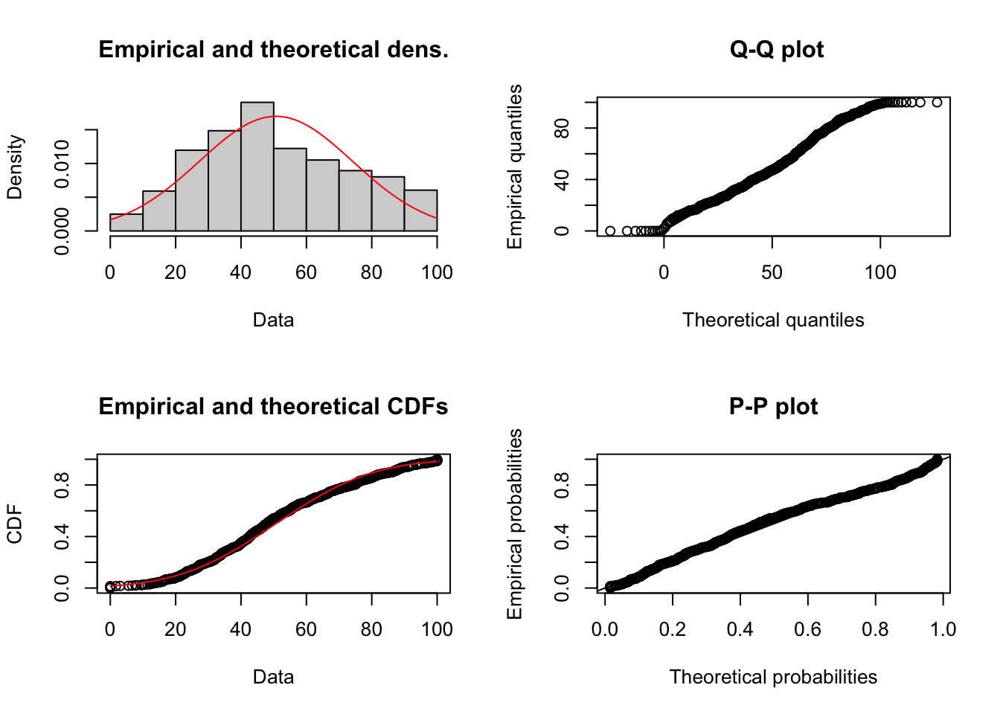
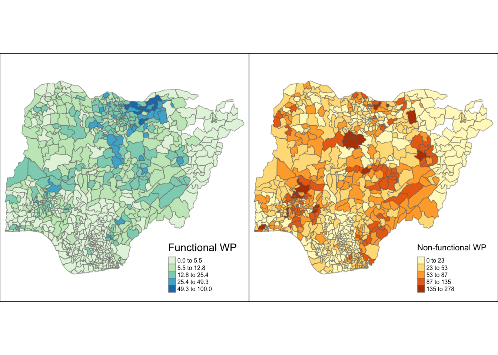
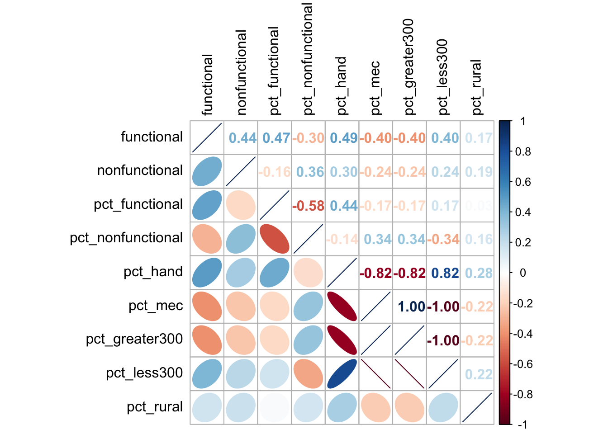
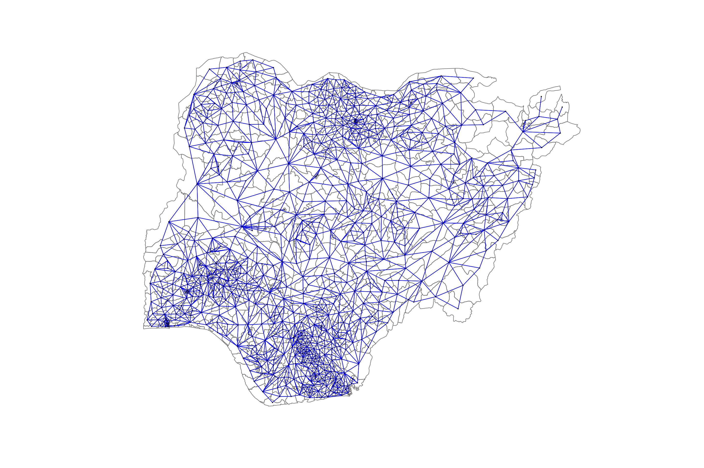
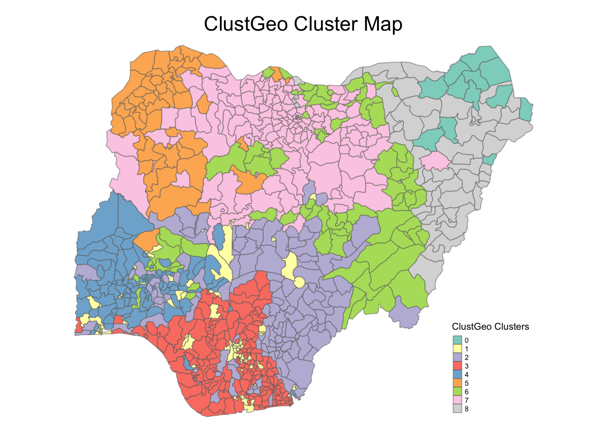

Show code
pacman::p_load(sf, tidyverse, tmap, spdep, funModeling,
corrplot, ggpubr, heatmaply, factoextra, cluster, ClustGeo)Take-home Exercise 2 is a continuation of Take-home Exercise 1. In this exercise, we will utilize spatially constrained clustering techniques like SKATER or ClustGeo to conduct the regionalization of Nigeria’s government areas (LGA level - ADM2). The regionalization will be based on the variables below:
Total number of functional water points
Total number of nonfunctional water points
Percentage of functional water points
Percentage of non-functional water points
Percentage of main water point technology (i.e. Hand Pump)
Percentage of usage capacity (i.e. < 1000, >=1000)
Percentage of rural water points
Percentage of water source (i.e. Well)
The data used in this exercise is the same as in Take-home Exercise 1. More details about the data and its source are mentioned in Take-home Exercise 1. In short, we will use two data sets:
Geospatial data: the ADM2 data of Nigeria downloaded from Geoboundaries. For simplicity sake, we rename the files to NGA-ADM2.
Aspatial data: the data of water points in Nigeria is downloaded and filtered from the data set WPdx Global Data Repositories.
sf: used for importing, managing, and processing geospatial data
tidyverse: a collection of packages for data science tasks. It contains the sub-packages dplyr, ggplot2, forcats, tibble, readr, stringr, tidyr, purrr
tmap: used for creating thematic maps, such as choropleth and bubble maps
spdep: used for calculating spatial dependence - weighting schemes and statistics
funModeling: used for EDA and data preparation
corrplot, ggpubr, heatmaply, factoextra: multivariate data visualization and analysis
cluster, ClustGeo: cluster analysis
We will load the needed packages into our environment using the code below.
pacman::p_load(sf, tidyverse, tmap, spdep, funModeling,
corrplot, ggpubr, heatmaply, factoextra, cluster, ClustGeo)Repeating what we did in Take-home Exercise 1, we will import the data, filter the data relevant to Nigeria, then conduct data wrangling to prepare for spatially constrained clustering.
After importing the data, we filter the data related to Nigeria water points using the code chunk below. After that, we save the imported data set into an rds file called wp_nga.
wp <- st_read(dsn = "data/aspatial", layer = "geo_export", crs = 4326) %>%
filter(clean_coun == "Nigeria")Reading layer `geo_export' from data source
`/Users/sylvia/sylvie-le/ISSS624/Take-home_Ex/Take-home_Ex2/data/aspatial'
using driver `ESRI Shapefile'
Simple feature collection with 406566 features and 72 fields
Geometry type: POINT
Dimension: XY
Bounding box: xmin: -92.05073 ymin: -27.31495 xmax: 92.32694 ymax: 26.65622
Geodetic CRS: WGS 84write_rds(wp, "data/wp_nga.rds")Next, we reload the Nigeria aspatial data to an object called wp_nga.
wp_nga <- read_rds("data/wp_nga.rds")We import the geospatial data of Nigeria’s government areas into our environment.
nga <- st_read(dsn = "data/geospatial",
layer = "NGA-ADM2",
crs = 4326)Reading layer `NGA-ADM2' from data source
`/Users/sylvia/sylvie-le/ISSS624/Take-home_Ex/Take-home_Ex2/data/geospatial'
using driver `ESRI Shapefile'
Simple feature collection with 774 features and 5 fields
Geometry type: MULTIPOLYGON
Dimension: XY
Bounding box: xmin: 2.668534 ymin: 4.273007 xmax: 14.67882 ymax: 13.89442
Geodetic CRS: WGS 84This section is dedicated to examining and transforming the data in wp_nga to include the data regarding water points status, technology, location (urban or rural), and capacity.
By inspecting the wp_nga file, we see that the data we want to use for clustering corresponds with the variables below.
| Data | Variable Name | Data Type/Format |
|---|---|---|
| Water point status | status_cle |
Nominal/String |
| Water point technology | X_water_tec |
Nominal/String |
| Water point capacity | usage_cap |
Numeric/Continuous |
| Water point location | is_urban |
Boolean |
Let’s look at the distribution of the variables by using the functions from funModeling package. freq() is used for categorical data, and plot_num() is used for numerical data.
wpstat <- freq(data = wp_nga, input = "status_cle")wptec <- freq(data = wp_nga, input = "X_water_tec")wpcap <- hist(wp_nga$usage_cap, main = "Usage cap distribution", xlab = "Usage cap")wploc <- freq(data = wp_nga, input = "is_urban")
While freq() reveal the missing values as NA, hist() allows and omits NA values. Therefore, we need to check NA values for usage_cap with the code chunk below.
checkna <- is.na(wp_nga$usage_cap)
summary(checkna) Mode FALSE
logical 95008 The good news is there is no missing value in usage_cap. We can proceed with our analysis.
Using filter() from the dplyr package, we filter out the functional values and assign it to a new variable called wpt_functional. This method will be used to extract other data from wp_nga.
wpt_functional <- wp_nga %>%
filter(status_cle %in%
c("Functional", "Functional but needs repair",
"Functional but not in use"))wpt_nonfunctional <- wp_nga %>%
filter(status_cle %in%
c("Non-Functional", "Non-Functional due to dry season",
"Abandoned/Decommissioned", "Abandoned",
"Non functional due to dry season"))Looking at the distribution of the water point technology, we see that Hand Pump and Mechanized Pump account for the majority of water points technology, 61.84% and 26.99% respectively. We will extract the data containing water points with hand pump technology and mechanized pump technology.
handpump <- wp_nga %>%
filter(X_water_tec == "Hand Pump")
mecpump <- wp_nga %>%
filter(X_water_tec == "Mechanized Pump")Based on the histogram of usage_cap, there are two major range of values that the usage capacity clutters around. The first range is under 400, and the second range is above 800 and less than 1,000. We will use summary() of Base R to inspect in more details.
summary(wp_nga$usage_cap) Min. 1st Qu. Median Mean 3rd Qu. Max.
50.0 300.0 300.0 488.6 1000.0 1000.0 We will use the threshold of the median, which is 300, to recode usage_cap and form two data range. After recoding, we will also extract usage capacity the data with recoded range. To recode, we will use mutate() and replace() of dplyr.
wp_nga <- read_rds("data/wp_nga.rds") %>%
mutate(usage_cap = replace(usage_cap, usage_cap > 300, "Greater than 300")) %>%
mutate(usage_cap = replace(usage_cap, usage_cap <= 300, "Less than or equal to 300"))
cap300_greater <- wp_nga %>% filter(usage_cap == "Greater than 300")
cap300_less <- wp_nga %>% filter(usage_cap == "Less than or equal to 300")ruralwp <- wp_nga %>% filter(is_urban == "False")Similar to what we did in Take-home Exercise 1, now it is time to group the variables according to which government areas that observation belong to. We will conduct point-in polygon count using st_intersects() of tmap.
nga_wp <- nga %>%
mutate(total_wp = lengths(st_intersects(nga, wp_nga))) %>%
mutate(functional = lengths(st_intersects(nga, wpt_functional))) %>%
mutate(nonfunctional = lengths(st_intersects(nga, wpt_nonfunctional))) %>%
mutate(hand = lengths(st_intersects(nga, handpump))) %>%
mutate(mechanized = lengths(st_intersects(nga, mecpump))) %>%
mutate(greater_300_cap = lengths(st_intersects(nga, cap300_greater))) %>%
mutate(less_300_cap = lengths(st_intersects(nga, cap300_less))) %>%
mutate(rural = lengths(st_intersects(nga, ruralwp)))While duplicate area names do not affect spatial weights analysis because it is based on the geometry of the areas, it can affect cluster analysis which is based on the values of the variables. Therefore, we need to check and rename duplicates area names before conducting cluster analysis. To check for duplicates, we will use duplicated() of the tidyverse package.
dupcheck <- duplicated(nga_wp$shapeName)
summary(dupcheck) Mode FALSE TRUE
logical 768 6 From the summary, we can see that there are 6 areas with duplicate names. These are the local government areas (LGA) with the same name that belong to different states on the ADM1 level. Using the code chunk below, we extract the names of the duplicated areas, then match them with their corresponding ADM1 in wp_nga states to find out which state they belong to.
dupnames <- nga_wp[dupcheck,]$shapeName
dupnames[1] "Bassa" "Ifelodun" "Irepodun" "Nasarawa" "Obi" "Surulere"Now let’s use the duplicated names we extracted to find out the states they belong to. cbind() is used to filter duplicates from multiple columns.
statenames <- wp_nga[wp_nga$clean_adm2 %in% dupnames, 14:15]
statenames <- statenames[!duplicated(cbind(statenames$clean_adm1, statenames$clean_adm2)),]
statenamesSimple feature collection with 12 features and 2 fields
Geometry type: POINT
Dimension: XY
Bounding box: xmin: 3.355785 ymin: 6.498105 xmax: 8.68657 ymax: 11.98826
Geodetic CRS: WGS 84
First 10 features:
clean_adm1 clean_adm2 geometry
99 Kwara Irepodun POINT (4.926598 8.107983)
289 Kogi Bassa POINT (7.063799 7.884609)
863 Lagos Surulere POINT (3.355785 6.498105)
3778 Benue Obi POINT (8.332327 6.926308)
7353 Osun Irepodun POINT (4.490475 7.829663)
7382 Osun Ifelodun POINT (4.66123 7.913148)
7640 Oyo Surulere POINT (4.447453 7.942235)
12445 Nasarawa Nasarawa POINT (7.837579 7.998326)
15215 Kwara Ifelodun POINT (4.859352 8.520893)
15345 Nasarawa Obi POINT (8.670447 8.356312)Now we have a list of 12 duplicated LGAs together with their states. Notice that since we are filtering on wp_nga, the geometry is the location point of a certain water point and not of the LGA. Therefore, we will use st_join() of sp package to add the state names into nga_wp based on geometry data. paste() of Base R is used to concatenate the LGA name with their state name in shapeName column, then str_trim() of Base R is used to remove the white space, if any. After we have added the state names to the duplicate LGA names, clean_adm1 and clean_adm2 column will be removed.
nga_wp <- st_join(nga_wp, statenames) %>%
mutate(clean_adm1 = replace_na(clean_adm1, " "))
nga_wp$shapeName <- str_trim(paste(nga_wp$shapeName, nga_wp$clean_adm1))
nga_wp <- subset(nga_wp, select = -c(clean_adm1, clean_adm2))Absolute measurement of a water point attribute can be affected by the number of water points in an area. For example, an urban area can have a higher number of rural water points than a rural area, simply because it has more water points, while the rural areas does not have many water points to begin with. To offset that effect, we will use percentage measurement. The percentage is calculated over the number of water points having a specific attribute in correspondent with the total number of water points in that government area.
Before we calculate the percentage, it is important to check out the distribution of total_wp because it is the denominator. The code chunk below filters if there is any area that does not have any water points.
zerowp <- nga_wp %>%
filter(total_wp == 0)
zerowp$shapeName [1] "Abadam" "Bakassi" "Geidam" "Gubio" "Gujba"
[6] "Guzamala" "Kaga" "Kala/Balge" "Kukawa" "Madagali"
[11] "Marte" "Mobbar" "Nganzai" Based on the result, we know that the areas above do not have any water points. As the goal of our cluster analysis is to inspect the areas based on their water point count, the areas with no water points should be removed from our data set. The tasked will be carried out using subset() of Base R.
nga_wp <- subset(nga_wp, total_wp != 0)Next, we will calcuate the percentage of all variables in nga_wp.
nga_wp <- nga_wp %>%
mutate(pct_functional = functional/total_wp*100) %>%
mutate(pct_nonfunctional = nonfunctional/total_wp*100) %>%
mutate(pct_hand = hand/total_wp*100) %>%
mutate(pct_mec = mechanized/total_wp*100) %>%
mutate(pct_greater300 = greater_300_cap/total_wp*100) %>%
mutate(pct_less300 = less_300_cap/total_wp*100) %>%
mutate(pct_rural = rural/total_wp*100)Finally, we will remove the unnecessary columns, which are Level, shapeID, shapeGroup, shapeType, hand, mechanized, greater_300_cap, less_300_cap, rural. At the same time, we relocate the geometry column to after shapeName column.
nga_wp <- nga_wp[,-c(2,3,4,5,9,10,11,12,13)] %>%
relocate(geometry, .after = shapeName)Before proceeding, we need to transform nga_wp into a projected coordinate system. The reason being further analysis involves distance-based calculate, which will not yield correct result if the data is not in the projected coordinate system. To do the transformation task, we will utilize st_transform() from sf package. The EPSG code we will convert the data into is EPSG:26391, used for Nigeria West Belt.
nga_wp <- st_transform(nga_wp, crs = 26391)We will save nga_wp into an rds file using the code below.
write_rds(nga_wp, "data/nga_wp.rds")Now we can reload the nga_wp_clean.rds file we just saved.
nga_wp <- read_rds("data/nga_wp.rds")Because the variables in consideration are in numerical format, histogram and boxplot are appropriate tools to examine their distribution. Histogram reveals the shape of the distribution, while boxplot show if the variables has outliers and by how many.
To conduct this step. ggplot(), geom_histogram() and geom_boxplot() from ggplot2 package are utilized.
summary(nga_wp$functional) Min. 1st Qu. Median Mean 3rd Qu. Max.
0.00 18.00 47.00 68.51 88.00 752.00 funchis <- ggplot(data = nga_wp, aes(x = functional)) +
geom_histogram(bins = 20, color = "black", fill = "lightblue")
funcbox <- ggplot(data = nga_wp, aes(x = functional)) +
geom_boxplot(color = "black", fill = "lightblue")
plotfunc <- ggarrange(funchis, funcbox, ncol = 2, nrow = 1)
annotate_figure(plotfunc, top = text_grob("Functional Water Points Count",
face = "bold"))summary(nga_wp$nonfunctional) Min. 1st Qu. Median Mean 3rd Qu. Max.
0.00 14.00 34.00 42.31 61.00 278.00 nfunchis <- ggplot(data = nga_wp, aes(x = nonfunctional)) +
geom_histogram(bins = 20, color = "black", fill = "lightblue")
nfuncbox <- ggplot(data = nga_wp, aes(x = nonfunctional)) +
geom_boxplot(color = "black", fill = "lightblue")
plotnfunc <- ggarrange(nfunchis, nfuncbox, ncol = 2, nrow = 1)
annotate_figure(plotnfunc, top = text_grob("Non-functional Water Points Count",
face = "bold"))funchisp <- ggplot(data = nga_wp, aes(x = pct_functional)) +
geom_histogram(bins = 20, color = "black", fill = "lightblue")
funcboxp <- ggplot(data = nga_wp, aes(x = pct_functional)) +
geom_boxplot(color = "black", fill = "lightblue")
plotfuncp <- ggarrange(funchisp, funcboxp, ncol = 2, nrow = 1)
annotate_figure(plotfuncp, top = text_grob("Functional Water Points Percentage",
face = "bold"))Since the distribution of pct_functional does not skew too much. We will conduct a fit normal line to find out if the variable follows a normal distribution. The task will be conducted with fitdistr() from fitdistrplus package.
pacman::p_load(fitdistrplus)
fit <- fitdist(nga_wp$pct_functional, "norm")
plot(fit)
From the plots, we can see that pct_functional follows a normal distribution.
nfunchisp <- ggplot(data = nga_wp, aes(x = pct_nonfunctional)) +
geom_histogram(bins = 20, color = "black", fill = "lightblue")
nfuncboxp <- ggplot(data = nga_wp, aes(x = pct_nonfunctional)) +
geom_boxplot(color = "black", fill = "lightblue")
plotnfuncp <- ggarrange(nfunchisp, nfuncboxp, ncol = 2, nrow = 1)
annotate_figure(plotnfuncp, top = text_grob("Non-functional Water Points Percentage",
face = "bold"))handhisp <- ggplot(data = nga_wp, aes(x = pct_hand)) +
geom_histogram(bins = 20, color = "black", fill = "lightblue")
handboxp <- ggplot(data = nga_wp, aes(x = pct_hand)) +
geom_boxplot(color = "black", fill = "lightblue")
plothandp <- ggarrange(handhisp, handboxp, ncol = 2, nrow = 1)
annotate_figure(plothandp, top = text_grob("Hand Pump Percentage",
face = "bold"))mechisp <- ggplot(data = nga_wp, aes(x = pct_mec)) +
geom_histogram(bins = 20, color = "black", fill = "lightblue")
mecboxp <- ggplot(data = nga_wp, aes(x = pct_mec)) +
geom_boxplot(color = "black", fill = "lightblue")
plotmecp <- ggarrange(mechisp, mecboxp, ncol = 2, nrow = 1)
annotate_figure(plotmecp, top = text_grob("Mechanized Pump Percentage",
face = "bold"))g300hisp <- ggplot(data = nga_wp, aes(x = pct_greater300)) +
geom_histogram(bins = 20, color = "black", fill = "lightblue")
g300boxp <- ggplot(data = nga_wp, aes(x = pct_greater300)) +
geom_boxplot(color = "black", fill = "lightblue")
plotg300p <- ggarrange(g300hisp, g300boxp, ncol = 2, nrow = 1)
annotate_figure(plotg300p, top = text_grob("Usage Capacity Greater than 300 Percentage",
face = "bold"))l300hisp <- ggplot(data = nga_wp, aes(x = pct_less300)) +
geom_histogram(bins = 20, color = "black", fill = "lightblue")
l300boxp <- ggplot(data = nga_wp, aes(x = pct_less300)) +
geom_boxplot(color = "black", fill = "lightblue")
plotl300p <- ggarrange(l300hisp, l300boxp, ncol = 2, nrow = 1)
annotate_figure(plotl300p, top = text_grob("Usage Capacity Less than or Equal to 300 Percentage",
face = "bold"))ruralhisp <- ggplot(data = nga_wp, aes(x = pct_rural)) +
geom_histogram(bins = 20, color = "black", fill = "lightblue")
ruralboxp <- ggplot(data = nga_wp, aes(x = pct_rural)) +
geom_boxplot(color = "black", fill = "lightblue")
plotruralp <- ggarrange(ruralhisp, ruralboxp, ncol = 2, nrow = 1)
annotate_figure(plotruralp, top = text_grob("Rural Water Point Percentage",
face = "bold"))Looking at the distribution, we can see that the scale of the variables are within 0 to 100 for all percentage variables. functional and nonfunctional has the maximum value of 752 and 278 respectively. Because the range of functional is very large comparing to the range of other variables, we need to standardize functional.
Notes: the distribution of most variables is skewed and does not fit the normal distribution. Therefore, we do not have enough evidence to assume that the variables follow a normal distribution.
We will standardize functional using the Min-Max method. The task is done using normalize() of heatmaply. The standardized value is then multiplied by 100 to convert it into the percentage value.
nga_wp$functional = normalize(nga_wp$functional)*100Choropleth map is used to examine the distribution of attributes over the studied areas. The density of the values is displayed based on the intensity of the color. In the maps below, we will use tm_shape(), tm_borders(), tm_fill() and tm_arrange() from tmap package to draw the choropleth map.
funcmap <- tm_shape(nga_wp) +
tm_fill(col = "functional", n = 5, style = "jenks", title = "Functional WP", palette = "GnBu") +
tm_borders(alpha = 0.5) +
tm_layout(legend.width = 0.3,
legend.height = 0.3,
legend.text.size = 0.5)
nfuncmap <- tm_shape(nga_wp) +
tm_fill(col = "nonfunctional", n = 5, style = "jenks", title = "Non-functional WP") +
tm_borders(alpha = 0.5) +
tm_layout(legend.width = 0.3,
legend.height = 0.3,
legend.text.size = 0.5)
funcpmap <- tm_shape(nga_wp) +
tm_fill(col = "pct_functional", n = 5, style = "jenks",
title = "Functional WP Percentage", palette = "GnBu") +
tm_borders(alpha = 0.5) +
tm_layout(legend.width = 0.3,
legend.height = 0.3,
legend.text.size = 0.5)
nfuncpmap <- tm_shape(nga_wp) +
tm_fill(col = "pct_nonfunctional", n = 5, style = "jenks", title = "Non-functional WP Percentage") +
tm_borders(alpha = 0.5) +
tm_layout(legend.width = 0.3,
legend.height = 0.3,
legend.text.size = 0.5)
handpmap <- tm_shape(nga_wp) +
tm_fill(col = "pct_hand", n = 5, style = "jenks",
title = "Hand Pump Percentage", palette = "BuPu") +
tm_borders(alpha = 0.5) +
tm_layout(legend.width = 0.3,
legend.height = 0.3,
legend.text.size = 0.5)
mecpmap <- tm_shape(nga_wp) +
tm_fill(col = "pct_mec", n = 5, style = "jenks",
title = "Mechanized Pump Percentage", palette = "BuPu") +
tm_borders(alpha = 0.5) +
tm_layout(legend.width = 0.3,
legend.height = 0.3,
legend.text.size = 0.5)
g300pmap <- tm_shape(nga_wp) +
tm_fill(col = "pct_greater300", n = 5, style = "jenks",
title = ">300 Cap Percentage", palette = "PuBuGn") +
tm_borders(alpha = 0.5) +
tm_layout(legend.width = 0.3,
legend.height = 0.3,
legend.text.size = 0.5)
l300pmap <- tm_shape(nga_wp) +
tm_fill(col = "pct_less300", n = 5, style = "jenks",
title = "<=300 Cap Percentage", palette = "PuBuGn") +
tm_borders(alpha = 0.5) +
tm_layout(legend.width = 0.3,
legend.height = 0.3,
legend.text.size = 0.5)
ruralpmap <- tm_shape(nga_wp) +
tm_fill(col = "pct_rural", n = 5, style = "jenks",
title = "Rural Percentage", palette = "BuGn") +
tm_borders(alpha = 0.5) +
tm_layout(legend.width = 0.3,
legend.height = 0.3,
legend.text.size = 0.5)
total <- tm_shape(nga_wp) +
tm_fill(col = "total_wp", n = 5, style = "jenks",
title = "Total water point", palette = "BrBG") +
tm_borders(alpha = 0.5) +
tm_layout(legend.width = 0.3,
legend.height = 0.3,
legend.text.size = 0.5)tmap_arrange(total, ruralpmap, asp = 1, ncol = 2, outer.margins = c(0,0,0,0))tmap_arrange(funcmap, nfuncmap, asp = 1, ncol = 2, outer.margins = c(0,0,0,0))
tmap_arrange(funcpmap, nfuncpmap, asp = 1, ncol = 2, outer.margins = c(0,0,0,0))tmap_arrange(handpmap, mecpmap, asp = 1, ncol = 2, outer.margins = c(0,0,0,0))tmap_arrange(g300pmap, l300pmap, asp = 1, ncol = 2, outer.margins = c(0,0,0,0))Based on the maps, the distribution of functional and non-functional water points count overlap with total water point count, which is understandable because the higher total_wp, the higher functional and nonfunctional. This similarity decreases as the count is changed to percentage with pct_functional and pct_nonfunctional. As the cluster analysis is sensitive toward correlation, we will not include total_wp into clustering.
In addition, the map of mechanized pump and usage capacity greater than 300 look similar, suggesting correlation. Since correlation will affect clustering, we need to detect and remove other correlated variables.
Notice that the white areas on the map are the LGAs that we removed because they have zero water points.
Before we perform cluster analysis, it is important for us to ensure that the cluster variables are not highly correlated. To detect correlation, the best tool is multivariate graph with corrplot.mixed() from corrplot package. st_drop_geometry() from sf package is used to remove the geometry column and turn nga_wp into a non-spatial data frame.
Notes: highly correlated meaning the correlation coefficient is greater than or equal to 0.85.
clust.cor = cor(st_drop_geometry(nga_wp[,4:12]))
corrplot.mixed(clust.cor,
lower = "ellipse",
upper = "number",
tl.pos = "lt",
diag = "l",
tl.col = "black")
Based on the multivariate correlation table, pct_less300 is highly correlated with pct_mec and pct_greater300. pct_mec and pct_greater300 are also highly correlated. We will remove pct_less300 and pct_mec from our analysis.
nga_wp <- nga_wp[,-c(9, 11)]
clust.cor = cor(st_drop_geometry(nga_wp[,4:10]))
corrplot.mixed(clust.cor,
lower = "ellipse",
upper = "number",
tl.pos = "lt",
diag = "l",
tl.col = "black")After removing pct_less300 and pct_mec, our data is no longer highly correlated.
To conduct the hierarchy cluster analysis, it is important that we have the right format of data. As the cluster analysis works on the variables values only, we need to extract them from nga_wp_clean simple feature data set. After that, we will set the row names to be the name of the areas.
clust_var <- nga_wp[,-c(3)] %>%
st_set_geometry(NULL)Next, we will assign the shapeName column to be the row name column.
row.names(clust_var) <- clust_var$shapeName
head(clust_var) shapeName functional nonfunctional pct_functional
Aba North Aba North 0.9308511 9 41.17647
Aba South Aba South 3.8563830 35 40.84507
Abaji Abaji 3.0585106 34 40.35088
Abak Abak 3.0585106 25 47.91667
Abakaliki Abakaliki 10.9042553 42 35.19313
Abeokuta North Abeokuta North 2.1276596 15 47.05882
pct_nonfunctional pct_hand pct_greater300 pct_rural
Aba North 52.94118 11.764706 82.35294 0.000000
Aba South 49.29577 9.859155 87.32394 5.633803
Abaji 59.64912 40.350877 59.64912 84.210526
Abak 52.08333 8.333333 91.66667 83.333333
Abakaliki 18.02575 43.776824 9.44206 87.553648
Abeokuta North 44.11765 14.705882 76.47059 20.588235Lastly, we will remove the shapeName column.
nigeria_clust <- clust_var[,c(2:8)]To carry out this task, dist() of base R is used. There are many proximity matrix methods that the function offers. However, we will choose the default method which is “euclidean”.
proxmat <- dist(nigeria_clust, method = 'euclidean')We will use hclust() of Base R to do this task. Notice that hclust() uses the agglomeration method to compute the cluster. The functions supports eight clustering algorithms: ward.D, ward.D2, single, complete, average(UPGMA), mcquitty(WPGMA), median(WPGMC) and centroid(UPGMC).
First, we need to select the most optimal clustering algorithm.
m <- c( "average", "single", "complete", "ward")
names(m) <- c( "average", "single", "complete", "ward")
ac <- function(x) {
agnes(nigeria_clust, method = x)$ac
}
map_dbl(m, ac) average single complete ward
0.8924681 0.8278239 0.9467931 0.9886924 We can see that the ward method provides the strongest clustering structure. Therefore, we will use the ward method to compute the hierarchical clustering as in the code below.
hclust_ward <- hclust(proxmat, method = 'ward.D')We will use the gap statistic method with the help of clusGap() of the cluster package, combined with hcut() function from extrafacto package.
set.seed(12345)
gap_stat <- clusGap(nigeria_clust,
FUN = hcut,
nstart = 25,
K.max = 15,
B = 50)
print(gap_stat, method = "firstmax")Clustering Gap statistic ["clusGap"] from call:
clusGap(x = nigeria_clust, FUNcluster = hcut, K.max = 15, B = 50, nstart = 25)
B=50 simulated reference sets, k = 1..15; spaceH0="scaledPCA"
--> Number of clusters (method 'firstmax'): 15
logW E.logW gap SE.sim
[1,] 9.815179 10.422963 0.6077839 0.009610740
[2,] 9.638166 10.297151 0.6589849 0.010574727
[3,] 9.531530 10.207097 0.6755675 0.010630666
[4,] 9.444975 10.137891 0.6929163 0.010404717
[5,] 9.396917 10.105064 0.7081476 0.010156073
[6,] 9.347167 10.076573 0.7294059 0.009007775
[7,] 9.286980 10.051022 0.7640420 0.008166518
[8,] 9.257270 10.027901 0.7706308 0.007931508
[9,] 9.232442 10.006590 0.7741480 0.008129448
[10,] 9.208196 9.986848 0.7786527 0.008151905
[11,] 9.186749 9.968241 0.7814914 0.008044768
[12,] 9.160007 9.950893 0.7908861 0.007947134
[13,] 9.139783 9.934492 0.7947083 0.008080864
[14,] 9.121686 9.919149 0.7974631 0.008219217
[15,] 9.100932 9.904830 0.8038983 0.008005014Let’s visualize the plot for easier decision making!
fviz_gap_stat(gap_stat)While 14 is the optimal number of clusters, it is too much to support decision making based on that many clusters. We will choose 8 to be the number of clusters.
Now we can map the 8 clusters with the data table.
groups <- as.factor(cutree(hclust_ward, k = 8))
nigeria_sf_cluster <- cbind(nga_wp, as.matrix(groups)) %>%
rename(`CLUSTER`=`as.matrix.groups.`)hier_clust <- tm_shape(nigeria_sf_cluster) +
tm_fill("CLUSTER",
title = "Hierarchical Clusters") +
tm_layout(main.title = "Hierarchical Cluster Map",
main.title.position = "center",
main.title.size = 1.4,
legend.height = 0.25,
legend.width = 0.3,
legend.position = c("right", "bottom"),
frame = FALSE) +
tm_borders(alpha = 0.5)
hier_clustThere are notes to take here:
The clusters are dispersing. We can see that there are areas of cluster 8 and cluster 5 being group together, but there are groups that are far away from each other. Other clusters are scattered all around Nigeria. This is because the hierarchical clustering method is not spatially constrained.
There are some white gaps on the map, which are the zero-water-point LGAs that we removed. To better visualize Nigeria, we can add them back to our mapping data table as a pseudo cluster.
SKATER is a spatially constrained clustering method based on the contiguity of the geospatial units. It uses the Tree Edge Removal algorithm to construct minimum spanning tree from adjacency graph, achieving maximum internal homogeneity within the cluster.
To conduct SKATER clustering, there are … steps.
Convert the simple feature data frame into a spatial polygon data frame. This is because the SKATER function only works on spatial polygon data frames.
Compute neighbor list. The neighbor is defined based on contiguity, also known as shared boundary.
Compute minimum spanning tree. The trees are calculated using SKATER function to maximize internal homogeneity.
Compute spatially constrained clusters. In this step, we group and assign cluster labels to the area unites.
Visualize the clusters on the map. Using the choropleth map, we will display the location of the clusters on the studied area.
This task is conducted using as_Spatial() from sp package.
wp_sp <- as_Spatial(nga_wp)poly2nb() from spdep is used to compute the contiguous neighbor list using the QUEEN method.
wp_nb <- poly2nb(wp_sp)
summary(wp_nb)Neighbour list object:
Number of regions: 761
Number of nonzero links: 4348
Percentage nonzero weights: 0.750793
Average number of links: 5.713535
Link number distribution:
1 2 3 4 5 6 7 8 9 10 11 12 14
4 16 57 122 177 137 121 71 39 11 4 1 1
4 least connected regions:
138 509 525 560 with 1 link
1 most connected region:
508 with 14 linksWith the neighbor list, now we can view the neighbor network using plot() from Base R.
plot(wp_sp,
border=grey(.5))
plot(wp_nb,
coordinates(wp_sp),
col="blue",
pch = 19,
cex = 0.2,
add=TRUE)
nbcosts() from spdep package will be used to calculate the cost of each tree, which is the distance between the nodes. This function compute this distance using a data.frame with observations vector in each node.
lcosts <- nbcosts(wp_nb, nigeria_clust)When viewing lcosts, we notice that it has the pairwise dissimilarity of the variables between a specific LGA and its neighbors. Next, we will compute a weight matrix based on the data of lcosts, treated as the weight. The “binary” style is chosen for the weight calculation as it is more robust.
nigeria.w <- nb2listw(wp_nb,
lcosts,
style = "B")
summary(nigeria.w)Characteristics of weights list object:
Neighbour list object:
Number of regions: 761
Number of nonzero links: 4348
Percentage nonzero weights: 0.750793
Average number of links: 5.713535
Link number distribution:
1 2 3 4 5 6 7 8 9 10 11 12 14
4 16 57 122 177 137 121 71 39 11 4 1 1
4 least connected regions:
138 509 525 560 with 1 link
1 most connected region:
508 with 14 links
Weights style: B
Weights constants summary:
n nn S0 S1 S2
B 761 579121 269330.2 43789952 481971405Next, we will use mstree() of spdep package to compute the minimum spanning tree.
nigeria.mst <- mstree(nigeria.w)Now we can plot the tree networks and their nodes onto Nigeria map.
plot(wp_sp, border=gray(.5))
plot.mst(nigeria.mst,
coordinates(wp_sp),
col="blue",
cex.lab=0.7,
cex.circles=0.005,
add=TRUE)Since our data set has more than 700 observations, presenting the minimum spanning tree on the map produces a lot of clutter nodes and overlapping text. From now on, we will only present the clusters using the choropleth map.
We will use skater() from spdep package to compute the spatially constrained clusters. Based on the analysis in Hierarchical Clustering, we will choose the number of cluster to be 8.
clust8 <- spdep::skater(edges = nigeria.mst[,1:2],
data = nigeria_clust,
method = "euclidean",
ncuts = 7)Now we can plot the choropleth map for the clusters!
First, let’s compute the clusters and their corresponding geometry. We will call it nigeria_spatialcluster.
groups_mat <- as.matrix(clust8$groups)
nigeria_spatialcluster <- cbind(nigeria_sf_cluster, as.factor(groups_mat)) %>%
rename(`SP_CLUSTER`=`as.factor.groups_mat.`)Notice that nigeria_spatialcluster is calculated based on nga_wp_clean, which does not contain the areas that have no water point. For the sake of visualization, we will add those areas back to our spatial clustering data and set the zero-water-point areas to be in cluster 0. To do so, we will adjust the columns of zerowp to match with nigeria_spatiacluster, transform it to the projected coordinate system of EPSG 26391, then stack the two table together.
zerowpl <- zerowp[, -c(2:5)] %>%
mutate(CLUSTER = "0") %>%
mutate(SP_CLUSTER = "0") %>%
relocate(geometry, .after = SP_CLUSTER) %>%
rename("pct_functional" = "hand") %>%
rename("pct_nonfunctional" = "mechanized") %>%
rename("pct_hand" = "greater_300_cap") %>%
rename("pct_greater300" = "less_300_cap") %>%
rename("pct_rural" = "rural")
zerowpl <- st_transform(zerowpl, crs = 26391)Now we will use rbind() of Base R to stack nigeria_spatialcluster and zerowpl together to create a data table of 9 clusters.
skater_map <- rbind(nigeria_spatialcluster, zerowpl)Now we can map the clusters created by SKATER method. Notice that cluster 0 is not a “true cluster” for analysis. It is added in for visualization only and we will not analyze its content.
skater_clust <- tm_shape(skater_map) +
tm_fill("SP_CLUSTER",
title = "SKATER Clusters") +
tm_layout(main.title = "SKATER Cluster Map",
main.title.position = "center",
main.title.size = 1.4,
legend.height = 0.25,
legend.width = 0.3,
legend.position = c("right", "bottom"),
frame = FALSE) +
tm_borders(alpha = 0.5)
skater_clustClustGeo method is a Ward-like hierarchical clustering method. It fins the balance between the similarity of the variables and the contiguity of the observations. In R, ClustGeo is done using the functions of the ClustGeo package. In the code chunk below, we will use hclustgeo() to compute the dissimilarity matrix.
The balance is represented by a value of alpha. We need to find the right balance to increase the spatial contiguity without reducing the quality of the non-spatial clustering. To do that, we can use choicealpha().
Before we can performed spatially constrained hierarchical clustering, a spatial distance matrix will be derived by using st_distance() of sf package.
dist <- st_distance(nga_wp, nga_wp)
distmat <- as.dist(dist)We will use choicealpha() to compute the value for mixing parameter alpha.
cr <- choicealpha(proxmat, distmat, range.alpha = seq(0, 1, 0.1), K=8, graph = TRUE)Based on the graph, alpha equal 0.3 is chosen.
clustG <- hclustgeo(proxmat, distmat, alpha = 0.3)
groups <- as.factor(cutree(clustG, k=8))
nigeria_Gcluster <- cbind(nga_wp, as.matrix(groups)) %>%
rename(`GEOCLUSTER` = `as.matrix.groups.`)Like with SKATER, now we combine the data of zero-water-point areas to display on the map together with the ClustGeo clusters.
zewpgeo <- zerowpl[,-c(10)] %>%
rename("GEOCLUSTER" = "SP_CLUSTER")
geo_map <- rbind(nigeria_Gcluster, zewpgeo)Now we can map the spatially-constraned ClustGeo clusters.
geo_clust <- tm_shape(geo_map) +
tm_fill("GEOCLUSTER",
title = "ClustGeo Clusters") +
tm_layout(main.title = "ClustGeo Cluster Map",
main.title.position = "center",
main.title.size = 1.4,
legend.height = 0.25,
legend.width = 0.3,
legend.position = c("right", "bottom"),
frame = FALSE) +
tm_borders(alpha = 0.5)
geo_clust
tmap_arrange(skater_clust, geo_clust, asp = 1, ncol = 2)By comparing the map visualization, we can see that SKATER produces a cleaner view of regionalization, with the LGAs packed neatly together. ClustGeo, on the other hand, also produces regions that relatively overlap with the regions produced by SKATER, but some areas are scattering far from the main clustered region, and the border of the clustered region is not clear.
In addition, Cluster 1, 4, 6 contain very small LGAs that lie far away from each other. This will hinder customized efforts to organize water supply improvement initiatives. We can see that ClustGeo is not the appropriate tool to aid policy makers.
For this reason, we will base our next analysis on the SKATER method.
To compare the clusters, we will display their variable ranges in the form of boxplots. When put next to each other, this visualization method proves effective to compare the difference of the clusters. To do this task, we will use ggparcoord() from GGally package.
First, we will load the GGally package.
pacman::p_load(GGally)The graphs are drawn with the code below.
ggparcoord(data = nigeria_spatialcluster,
columns = c(3:9),
scale = "globalminmax",
alphaLines = 0.2,
boxplot = TRUE,
title = "Plots of SKATER Cluster Variables") +
facet_grid(rows = vars(SP_CLUSTER)) +
theme(axis.text.x = element_text(angle = 10))
nigeria_spatialcluster %>%
st_set_geometry(NULL) %>%
group_by(SP_CLUSTER) %>%
summarise(functional = mean(functional),
nonfunctional = mean(nonfunctional),
pfunc = mean(pct_functional),
pnfunc = mean(pct_nonfunctional),
phand = mean(pct_hand),
pg300 = mean(pct_greater300),
prural = mean(pct_rural))# A tibble: 8 × 8
SP_CLUSTER functional nonfunctional pfunc pnfunc phand pg300 prural
<fct> <dbl> <dbl> <dbl> <dbl> <dbl> <dbl> <dbl>
1 1 10.7 73.0 37.7 40.0 61.1 16.7 90.6
2 2 2.37 22.6 37.3 44.3 16.7 63.8 71.5
3 3 21.1 46.4 75.5 24.4 86.4 13.2 83.5
4 4 4.50 22.5 47.0 23.7 12.0 57.8 31.6
5 5 9.99 85.3 42.1 46.9 55.2 33.0 78.0
6 6 2.19 4.33 71.6 28.4 64.6 34.9 73.0
7 7 8.78 52.6 51.4 41.3 57.5 34.9 70.8
8 8 4.77 8.08 55.1 11.9 42.3 57.4 63.2Cluster 1: is the region in the south east of Nigeria. It contains the highest percentage of rural water points and a second-highest number of non-functional water point count. Water point capacity is low and mostly manual with hand pump. The region also contains the lower outliers of rural water point percentage, suggesting the presence of cities.
Cluster 2: lies in the south of Nigeria. This region has more than 71.5% of rural water points, but the percentage of water points with above-median capacity is also high (63.8%). The values of water point count and water point percentage suggests that the total water point count of this region is relatively low. The percentage of non-functional water points here is the second-highest.
Cluster 3: spans from the north to the central of Nigeria. This region is characterized with the highest number of functional water points. The percentage of hand pump water point is also the highest among the clusters with the lowest average capacity. While the percentage of non-functional water points are the second-lowest, the water points in this region are not efficient due to manual process and low capacity.
Cluster 4: is in the south east of Nigeria and contains the largest city of the nation - Lagos. The urban nature of the region is reflected by its low percentage of rural water points, with the highest average percentage of above-median capacity water points. The water points in the region is also highly mechanized, with the lowest percentage of hand pump water points.
Cluster 5: lies in the central east of Nigeria. It has the highest average count of non-functional water points. The percentage of non-functional water points is also the highest among all clusters.
Cluster 6: is located in the far west of Nigeria. The number of water points is low. While the region has a high percentage of functional water points, it can because of the low water point count. This is another region of rural areas with manual and low capacity water points.
Cluster 7: is in the north west of Nigeria. This region has high value of non-functional water point count, and low value of functional water point count. The average percentage of functional and non-functional water points are roughly equal, suggesting some areas having low count of total water points. The majority of the water point in this region lies in the rural area. This area also contains the second-lowest percentage of water points with higher-than-median capacity.
Cluster 8: is in the north east of Nigeria. Based on the choropleth map of total water point count in the EDA step, we can see that this part of Nigeria has the lowest water point count, and some LGAs (excluded from the cluster) do not have any water point at all. This is reflected in the low functional and non-functional water point count, yet high functional water point percentage.
With the spatially constrained clustering method, we can regionalize the LGAs in Nigeria based on the characteristic of water points in each region and how the LGAs are linked to each other. This method can be a useful tool to categorize and visualize regions for policy makers when it comes to improving the water supply in Nigeria.
This analysis can be improved even more. When looking at the water point count, we can’t help but questioning: why do some areas have less water points than others, and why some have more non-functional water points than others? Many factors can contribute to water point count and water point functionality, like population distribution, the economic health of the region, its geography and natural water supply, even the climate of the region. That information is not included in our analysis, but it can help us in producing more meaningful regionalization.